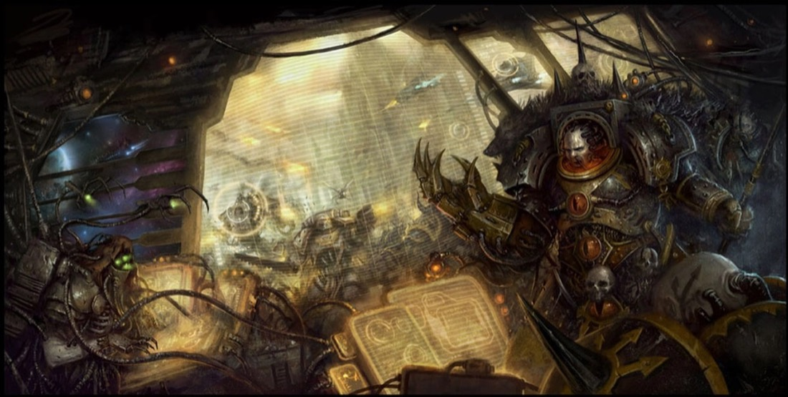

Horus
| Horus Lupercal | |
|---|---|
| Warmaster of the Imperium (c. 000.M30–005.M31) | |
 Votive portrait of Horus as primarch of the Luna Wolves, before his fall | |
| Titles | Primarch of the XVI Legion; the Lupercal; Warmaster; the Arch-Traitor |
| Allegiance | Imperium of Mankind (until 005.M31); Chaos |
| Legion | Sons of Horus, formerly the Luna Wolves |
| Homeworld | Cthonia |
| Created | Late M30, on Terra |
| Discovered | The first of the primarchs found by the Emperor |
| Died | 014.M31, aboard the Vengeful Spirit above Terra |
| Relatives | |
| |
| Wargear | |
| The Serpent's Scales (Terminator armour); Talon of Horus; the mace Worldbreaker | |
| Known for | The Horus Heresy; the Isstvan III atrocity; the Drop Site Massacre; the Siege of Terra |
Horus Lupercal, called the Lupercal by the warriors of his Legion and Warmaster Horus in the records of the Great Crusade, was one of the twenty primarchs and the master of the XVI Legion, the Luna Wolves, later named the Sons of Horus. He was the first primarch to be recovered by the Emperor of Mankind, and was considered by almost all of the Imperium's servants to be the greatest of the Emperor's sons. At the Triumph at Ullanor he was named the first and only Warmaster, with authority over every Legion and expedition of the Great Crusade.[1][2]
In 005.M31 Horus broke his oath. Corrupted by the powers of the Warp in the aftermath of a near-fatal wound on the world of Davin, he led nine of the eighteen known Space Marine Legions against the Emperor in the Horus Heresy, opening the war with the atrocity at Isstvan III and the Drop Site Massacre at Isstvan V. He brought the war to the Throneworld in 014.M31, and at the end of the Siege of Terra fell in single combat to the Emperor aboard his flagship. The Emperor destroyed his soul so that it could not be claimed by the Ruinous Powers.[3]
Horus is remembered as the Arch-Traitor. In the earliest Imperial histories he is condemned without qualification; later scholars of the Logos Historica Verita record the testimony of the Remembrancers who knew him and describe a commander of real charm, patience and humility whose fall they could not explain. He remains the most studied figure in the history of the Imperium.[4][5]
Early life
[edit]Creation and discovery
[edit]Horus was created in the genetic laboratories beneath the Himalazian mountains on Terra, as one of twenty beings engineered from the Emperor's own template. Before he could be born, the powers of the Warp scattered the gestation capsules across the galaxy. The capsule of Horus came to rest on Cthonia, a mining world of hive-cities and warring gangs only a few light-years from Terra, where he was adopted and raised by the gang lords of the hive. The Emperor, who had foreseen the scattering, found him early in the Great Crusade, and Horus was the first primarch reunited with his father. He is said to have been recognised by the Emperor immediately, and to have been welcomed to the household of the crusade as a son.[1][4]
The Emperor gave him command of the Legion that became the Luna Wolves, taking its name from the moon of Terra where it had been raised. Horus's early campaigns refined the style of command that would mark his career: he campaigned patiently, delegated freely, and inspired fierce personal loyalty in his officers. His inner council of captains, the Mournival, included Ezekyle Abaddon, Garviel Loken, Tarik Torgaddon and Horus Aximand.[2]
Great Crusade
[edit]
For two centuries Horus's Legion fought at the head of the crusade. The Sixty-third Expedition, under his command, conquered hundreds of worlds, fought xenos empires and brought the human colonies of whole regions into the Imperium. Among its ranks was the Remembrancer Order, an institution of historians and artists that Horus, unusually among the primarchs, welcomed and protected. The surviving writings of the Remembrancers Sindermann and Oliton are the principal eyewitness sources for his conduct in this period. They describe a man who studied the people he conquered, whose manner was gracious, and who frequently expressed unease at the cost of the crusade.[4][2]
Triumph at Ullanor
[edit]At the end of M30 Horus's forces and those of several Legions destroyed the vast Ork empire on Ullanor, the greatest greenskin host ever met by the Imperium. At the Triumph that followed the Emperor named Horus Warmaster, an office created for him alone. The Emperor returned to Terra and left the crusade in his son's hands. At the Emperor's suggestion, and at the urging of Sanguinius, Horus renamed his Legion the Sons of Horus. The elevation caused jealousy among the other primarchs, some of whom felt that Horus had been placed over them without cause, and the Emperor's retreat to Terra, for reasons that he would not explain, was felt by many as a withdrawal of trust.[6]
Fall
[edit]Davin
[edit]At Davin, a world that the Sixty-third Expedition had conquered with the help of the Word Bearers, the Chaplain Erebus steered Horus towards the Warrior Lodges, the secret societies of the Davinites. Horus was struck down by a ritual dagger, the Kinebrach anathame, wielded by an assassin named Eugen Temba during a campaign on the moon of Davin. Horus lay in a coma while the Legion's Apothecaries despaired. He was carried to the Temple of the Serpent Lodge, and according to the later testimony of those who were there, was shown a vision of the Emperor's future: a god-king worshipped by uncounted billions on a throne of sacrifice, and the primarchs forgotten.[2][5]
The powers of the Warp told Horus that the Emperor meant to take the Imperium for himself and cast off the sons who had built it. In exchange for his oath to the dark gods, Horus was offered the chance to rebuild the Imperium before this happened. He recovered, and was seen to be changed. Few of his Legion understood how. The Mournival's youngest members, Loken and Torgaddon among them, remained loyal to the Emperor, and were among those marked for death at Isstvan III.[2]
Preparations
[edit]Horus used the offices of the Word Bearers and the Warrior Lodges to prepare his coup in secret. Over several years he persuaded or coerced primarchs to follow him: Fulgrim, Angron, Mortarion, Perturabo, Konrad Curze, Lorgar, Magnus the Red and Alpharius Omegon. The reasons differed. Fulgrim was flattered and corrupted, Angron enraged, Lorgar convinced that the Emperor's gods did not exist while others did, and Magnus driven to the cause by the burning of his homeworld. The Warmaster also drew the Fabricator-General of Mars, Kelbor-Hal, into his alliance, and with him a large part of the Mechanicum.[7]
Horus Heresy
[edit]Isstvan
[edit]The war began on Isstvan III, where Horus, sent to put down a rebellious governor, bombarded the world with a viral weapon and so destroyed his own loyalist warriors and the planet's eight billion inhabitants. When the Emperor sent seven Legions to punish him at Isstvan V, Horus laid a trap with four secret allies in the reserve and nearly destroyed three loyalist Legions in the Drop Site Massacre. The Iron Hands' primarch Ferrus Manus was killed by Fulgrim, and his head was brought to Horus. Corvus Corax was wounded and Vulkan vanished. With the loyalist Legions broken, Horus declared himself openly against the Emperor.[8]
The war and the march on Terra
[edit]For seven years Horus directed the war from his flagship, the Vengeful Spirit, in a campaign that destroyed worlds and sent loyalist fleets in all directions. He held the greater part of the Imperium's attention by the Shadow Crusade and the Battle of Calth, kept the Blood Angels occupied at Signus, and used a warp storm of his allies' devising to scatter the loyalists. An attempt on his life by the Officio Assassinorum failed. In the last year of the war he gathered his armies at Ullanor, the site of his greatest victory, and led them to Mars and thence to Terra.[7][5]
Siege of Terra and death
[edit]
When the traitor fleets reached Terra in 014.M31, Horus took station on the Vengeful Spirit above the Imperial Palace and directed the siege from its decks, while his Titans and Legions broke the outer walls. By the account accepted since the opening of the Siege archives, he had by then drawn so deeply on the powers of the Warp that he stood at the threshold of a godhood of his own, and he had arranged for the Emperor to come to him. When the Emperor came, aboard the flagship, with Sanguinius, Rogal Dorn and the Custodian Constantin Valdor, the Warmaster met Sanguinius first and killed him. Horus then fought the Emperor in the throne room of the Vengeful Spirit in a duel that was fought in the material realm and in the Warp.[3]
The Emperor was grievously wounded. Aided by his ancient companion Ollanius Persson, whom the Ecclesiarchy remembers as Saint Ollanius Pius, and putting aside the human compassion that had restrained him, the Emperor killed Horus and destroyed his soul, so that the Ruinous Powers could not raise him again. Earlier Imperial tradition, still told in many cults, holds instead that Horus lowered his ship's shields in a moment of regret or defiance, and that he begged forgiveness with his last breath. The Imperial Fists, among others, preserve their own versions of the end. All agree that the Warmaster died, and that his death broke the assault on Terra.[3][5]
After death
[edit]The Sons of Horus were the first Legion to flee Terra on learning of their primarch's death. They carried his body to the daemon world of Maeleum in the Eye of Terror, where it lay enshrined for centuries until it was stolen by Fabius Bile and the Emperor's Children in an attempt to clone the Warmaster. Ezekyle Abaddon, the former First Captain of the Legion, reasserted his control, destroyed the body and took the Talon of Horus and the title of Warmaster of Chaos. The Legion painted its armour black in mourning and took a new name, the Black Legion.[7]
Horus's eye, the symbol of the Legion, remains in use among the Heretic Astartes, who invoke his name as a rebuke to the Emperor. The Imperium does not permit it to be spoken in a cathedral.[9]
Character and abilities
[edit]All sources describe Horus as the finest warrior and the finest commander of the primarchs. His physical strength, speed and stamina were beyond those of his brothers, and in the Great Crusade he was credited with the ability to anticipate the movements of an enemy long before they were made. The Remembrancers also recorded his humour, his habit of consulting his captains, and his unusual care for the human soldiers of the crusade. His flaws, according to the same witnesses, were pride, a fear of being regarded as lesser than the Emperor's other sons, and a conviction that his skill gave him the right to lead.[4][2]
Wargear
[edit]- The Serpent's Scales: a unique suit of Terminator armour forged on Mars and refined by Kelbor-Hal, proof against both physical and psychic attack.
- The Talon of Horus: a lightning claw worn on his left hand, later taken by Abaddon.
- Worldbreaker: a massive mace carried as a weapon of command.
See also
[edit]Notes
[edit]References
[edit]- ^ a b Liber Primarchus (M32, revised M41). Administratum Archive, Terra.
- ^ a b c d e f Oliton, Mersadie (c. 005.M31). Chronicles of the Luna Wolves. Remembrancer Order.
- ^ a b c The End and the Death: Records of the Final Day (opened 999.M41). Logos Historica Verita, Terra.
- ^ a b c d Sindermann, Kyril (c. 004.M31). Remembrances of the 63rd Expedition. Remembrancer Order.
- ^ a b c d Lexicanum Martialis. Officio Militaris.
- ^ Annals of the Triumph at Ullanor (c. 001.M31). Office of the Council of Terra.
- ^ a b c Chronicles of the Heresy (sealed). Logos Historica Verita, Terra.
- ^ Reports of the Isstvan System (c. 008.M31). Fleet Command, Terra.
- ^ Liber Ecclesiasticus (M37). Adeptus Ministorum.
Further reading
[edit]- Sindermann, Kyril (c. 004.M31). Remembrances of the 63rd Expedition. The Warmaster before the fall.
- Oliton, Mersadie (c. 005.M31). Chronicles of the Luna Wolves. The Legion's life on campaign.
- Chronicles of the Heresy (sealed). The war he began.